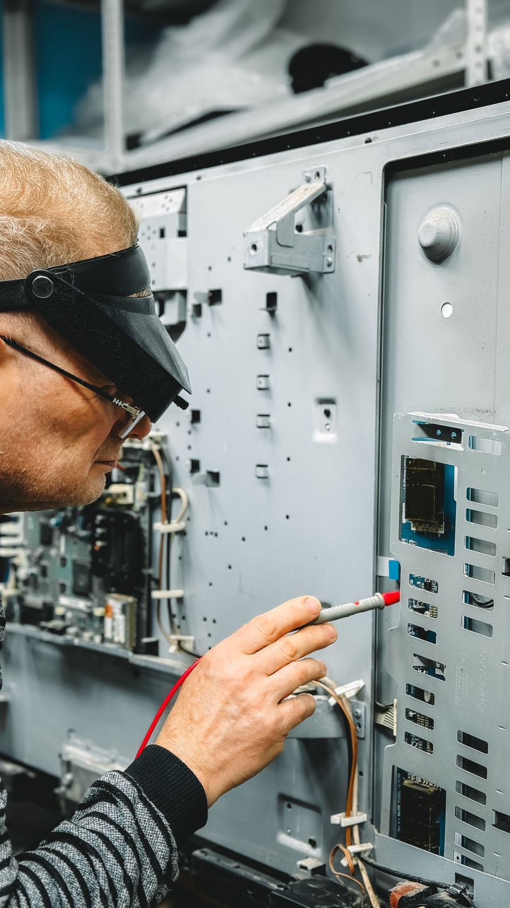
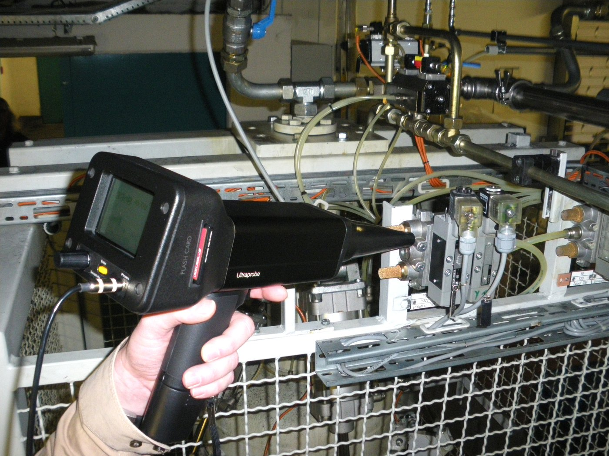
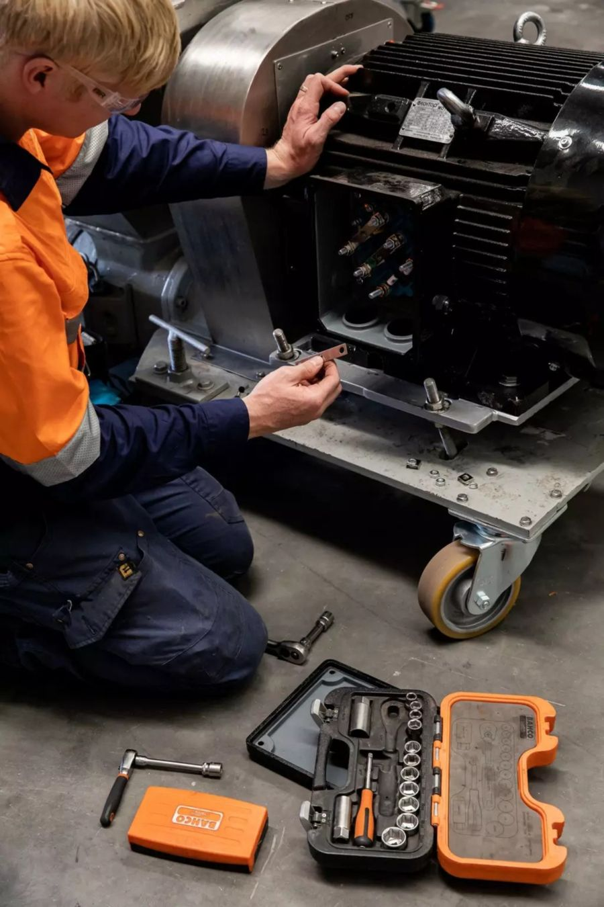
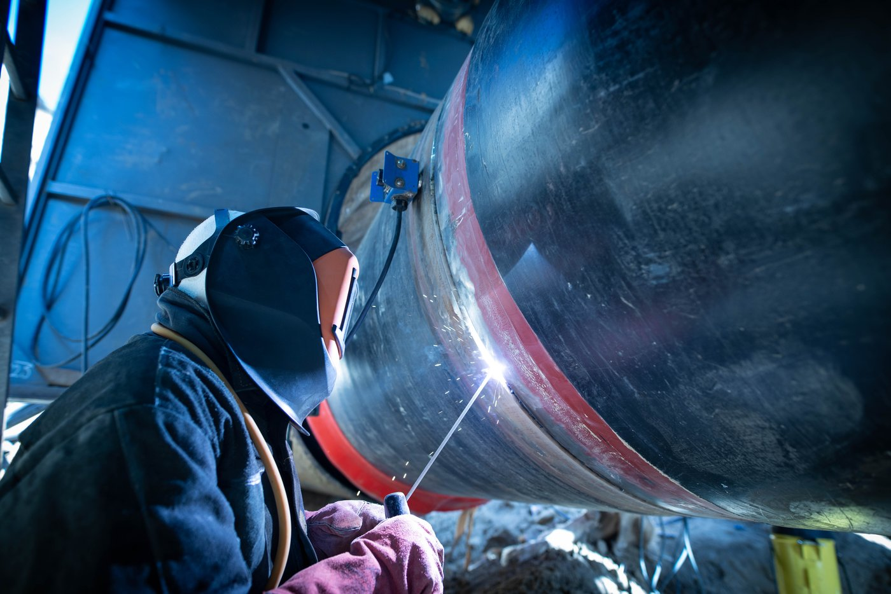
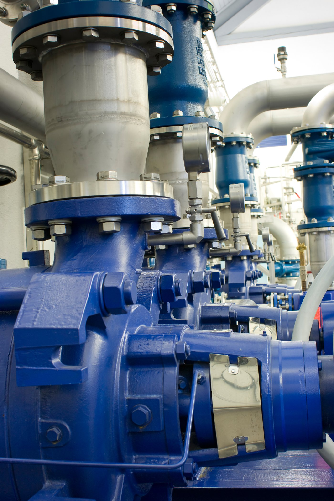
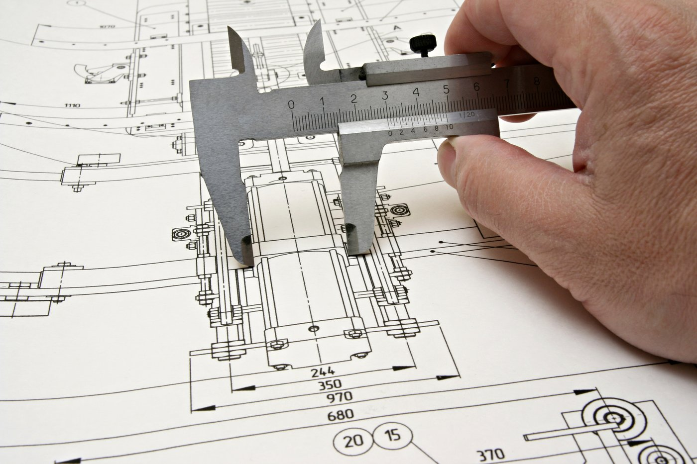
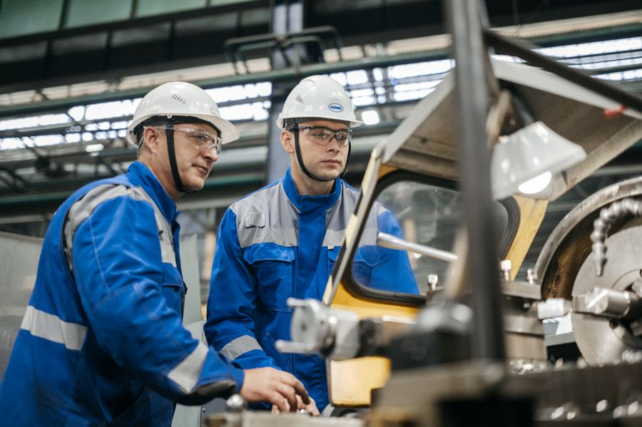
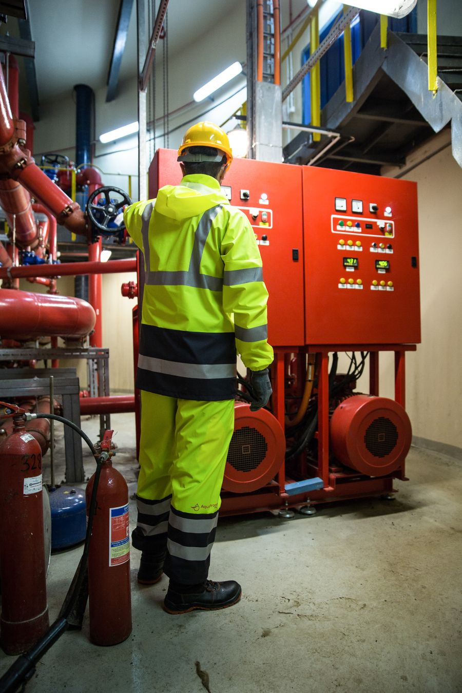
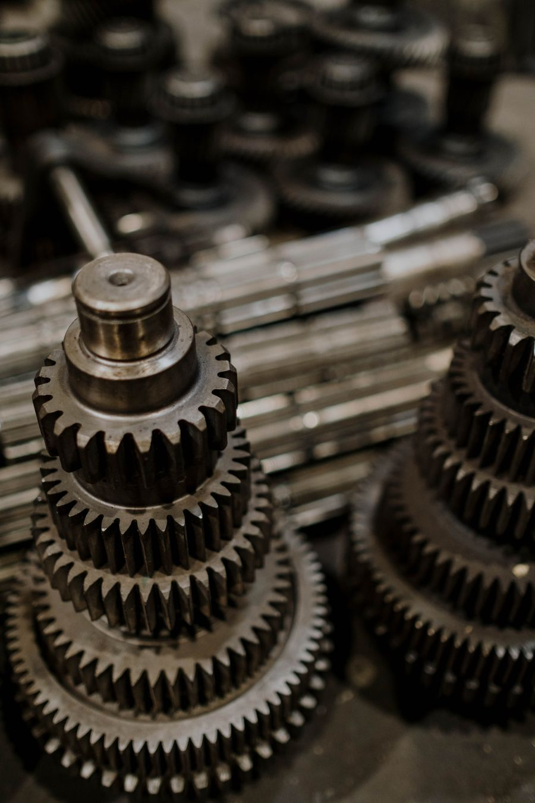

ANANTA participa en todas las fases del ciclo de vida de las instalaciones, aportando soluciones integrales que garantizan eficiencia, fiabilidad y continuidad operativa.
Desde su fase de proyecto, hasta la construcción y montaje de la instalación, puesta en marcha, mantenimiento y gestión, acompañamos a nuestros clientes en cada etapa del proyecto. Nuestra experiencia multidisciplinar y el compromiso de nuestros equipos nos permiten ofrecer un servicio global, flexible y adaptado a las necesidades de cada sector, contribuyendo al éxito y sostenibilidad de las instalaciones a lo largo del tiempo.
Representamos con éxito la función de externalización del mantenimiento, contribuyendo con nuestro know-how a la mejora de la fiabilidad y disponibilidad de los activos productivos de nuestros clientes.
Nuestros servicios están integrados para ofrecer una solución integral, desde la realización de pequeñas intervenciones hasta la implementación de grandes proyectos en modalidad llave en mano.
Especialistas en mantenimiento industrial para el sector agroalimentario y el tratamiento de aguas. Ingeniería de mantenimiento orientada a maximizar la disponibilidad de los equipos y reducir paradas no programadas.

Diseño de planes de mantenimiento adaptados a la criticidad de cada activo, con análisis de riesgo y criterios de fiabilidad, para equipos críticos, líneas de producción y sistemas de automatización.

Análisis de vibración, temperatura, presión o lubricación para detectar síntomas tempranos de fallo y planificar la intervención con precisión, reduciendo paradas no programadas y costes de mantenimiento.

La solución más completa para garantizar el funcionamiento de equipos, instalaciones y sistemas productivos: actuaciones preventivas, correctivas y de supervisión técnica, con planes adaptados a las necesidades reales de cada planta.

Recuperamos piezas dañadas por desgaste, corrosión o abrasión, alargando su vida útil.

Inspección, reparación y prueba de válvulas de todo tipo, con total garantía de seguridad.

Piezas y repuestos a medida, reduciendo tiempos de espera y dependencias externas.
Realizamos reparación integral y restauración de fiabilidad de todo tipo de maquinaria rotativa y sus componentes, con diagnóstico de causa raíz, proceso completo de reparación y puesta en servicio.
Comprobaciones externas para analizar el estado del equipo en el momento de la recepción.
Desmontaje del equipo y análisis de los elementos internos para determinar el alcance de la reparación.
Realización de oferta detallada, incluyendo componentes a sustituir y trabajos a realizar, con informe fotográfico.
Identificación de la causa raíz del fallo, diseño de la solución técnica, reparación integral de componentes, sustitución de rodamientos, cierres mecánicos y elementos de desgaste, mecanizados y restauración de tolerancias.
Equilibrado dinámico de rotores, en taller o in-situ, con rango de diámetro de 100 mm a 3890 mm y de 40 a 95.000 rpm.
Alineaciones in-situ o en taller, de transmisiones completas con acoplamiento o transmisiones por correa.
Entrega de informe detallando los trabajos realizados, con garantía y trazabilidad de componentes instalados.
Ejecución integral de montajes industriales y paradas de planta, de principio a fin.

Planificación, programación y ejecución de montajes industriales, del diseño a la puesta en marcha.
Desmontaje, transporte y reinstalación llave en mano, minimizando el tiempo de inactividad.

Planificación y ejecución de paradas programadas, minimizando el impacto en la producción.

Alineación láser y equilibrado dinámico en bombas, turbinas y equipos rotativos.
Solicitar información →Reparación integral de bombas, turbinas, compresores, motores eléctricos, reductores y demás equipos rotativos, con diagnóstico de causa raíz, reparación completa y puesta en servicio, con garantía y trazabilidad de los componentes instalados.
Ver proceso de reparación →Tecnología avanzada al servicio del control de sus procesos.
Sistemas de automatización y control que mejoran la eficiencia, la seguridad y la supervisión de sus instalaciones.
Solicitar información →